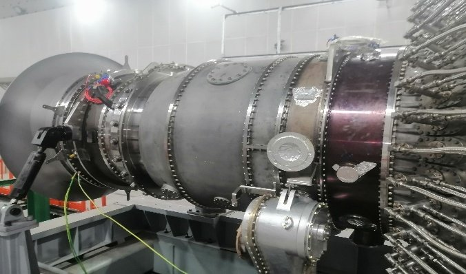

Gas turbines from micro-turbines up to 75 MW: development, analysis, service
We design gas turbine units and their components, perform engineering analysis, issue design documentation and extend the service life of operating machines. We support partners from the technical specification through testing to production start-up.

Six lines of work that support one another
Engineering and R&D
Contract development of gas turbine units and components: from the technical specification and conceptual design to detailed documentation and test support.
Learn moreService and life extension
Fleet condition and residual life assessment, extension of overhaul intervals, hot gas path restoration, installation supervision and commissioning.
Learn moreROTODYN LAB
AI-assisted engineering modelling: analysis reports, platform comparisons, automated calculation chains and documentation release.
Learn moreFuel flexibility
Hydrogen blends, syngas from waste and biomass, biogas and liquid fuel, with fuel flexibility built into the design from the first sketch.
Learn moreAdvisory and transactions
Joint venture support, technical due diligence of counterparties and equipment, negotiation support, structuring of agreements.
Learn moreSupply and market analysis
Gas turbine units, engines and components with a full documentation package; market reviews and platform comparisons on request.
Learn moreWe design, analyse, test and hand over the documentation
Full cycle
From thermodynamics and aerodynamic design to design documentation, test programmes and design supervision. Each discipline is covered by dedicated specialists.
Independence
We are not owned by any equipment manufacturer. Production and the rights to the results stay with the partner who builds the machine.
Three languages
We work in Russian, English and Chinese, on projects in Russia, the CIS and China and on international localisation programmes.
Machines developed by the team

Demand for 25–75 MW machines is growing while manufacturers are fully booked
Tell us about your project
The first conversation is free of charge: one or two calls to understand the subject and the constraints. Then a technical proposal with scope, schedule and cost.